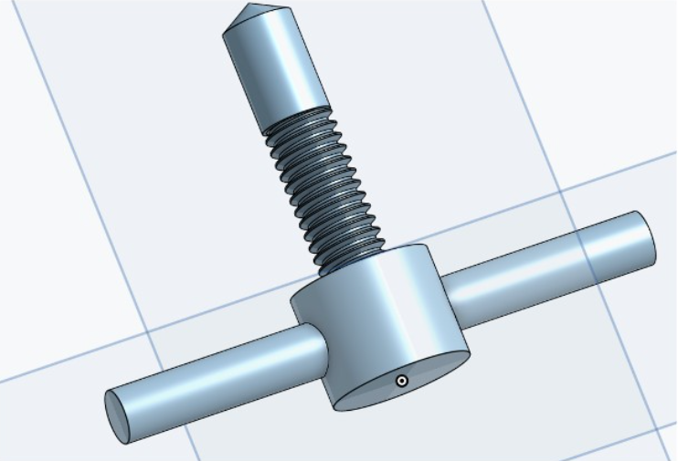
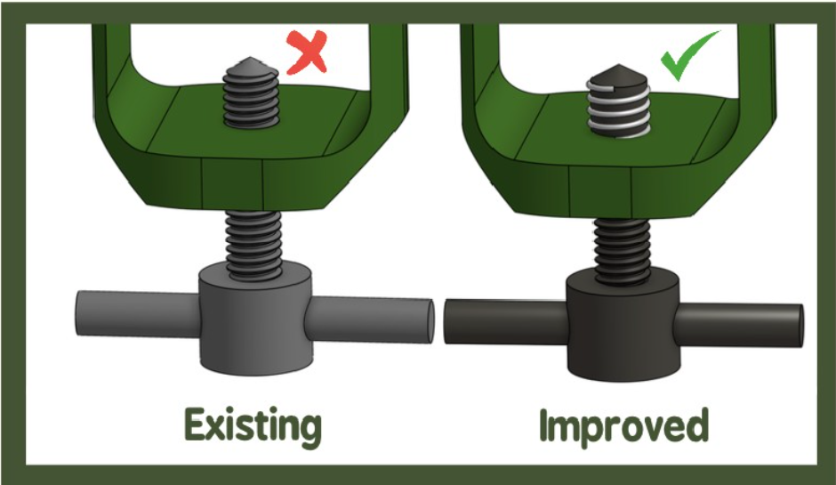
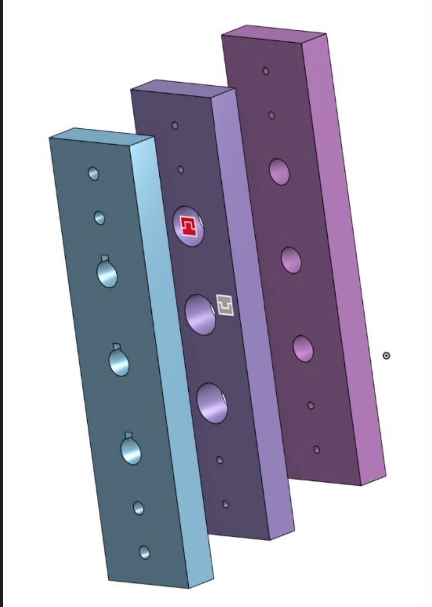
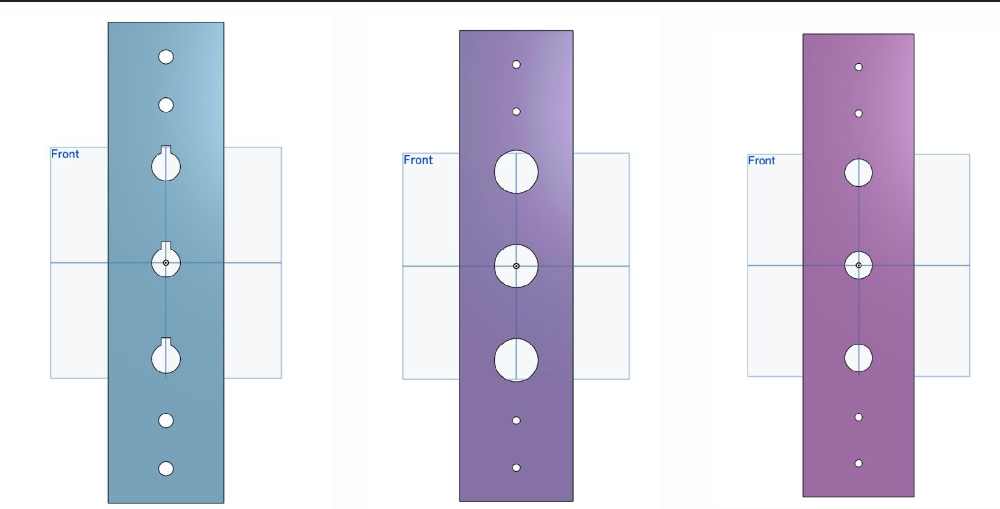

Reading
I like to spend my time reading because it allows me to explore different perspectives & ideas.
I'm Betsy Bejarano, a civil engineering student interested in project management, sustainable buildings, & the spaces that bring communities together.
My interests sit at the intersection of the built environment, sustainability, thoughtful design, & community impact.
I'm a proud first-generation Mexican American student at Northwestern University pursuing a Bachelor of Science in Civil Engineering, with an interest in project management.
I'm drawn to the process of turning an idea into a finished project: bringing people together, working through design challenges, & considering the details that make a space useful & welcoming. I believe engineering should serve both our planet & the people who depend on it.
Through coursework, student organizations, & hands-on projects, I'm continuing to build my technical skills while learning how collaboration, communication, & thoughtful planning shape successful work.
The hobbies, interests, & little things that make me, me.
I grew up in West Liberty, Iowa, a small town that has shaped the way I see community, opportunity, & the world around me. Today, I am a Civil Engineering student at Northwestern University, where I am developing my interests in project management & the built environment. Through my coursework, projects, & involvement in student organizations, I have discovered how much I enjoy bringing ideas to life, solving problems, & working with others toward a shared goal.
I like to spend my time reading because it allows me to explore different perspectives & ideas.
Expressing myself through writing is very therapeutic to me. I enjoy journaling, writing creatively, & documenting my thoughts & experiences.
I also enjoy creating content & using visual storytelling to capture experiences & share ideas. It's a fun way to connect with others & express my creativity.
Building a foundation in engineering analysis, design, & the systems that shape our built environment.
Relevant coursework: Design Thinking & Communication I & II, Multivariable Calculus, Linear Algebra, Statics, System Dynamics, Mechanics of Materials, & Differential Equations & Modeling (in progress).
A look at projects where I've explored design, prototyping, structural concepts, & collaboration.
Collaborating with a 15-member team on a steel bridge for the 2027 ASCE Student Steel Bridge Competition, while also developing a 3D-printed PLA bridge for the 2027 3D Printing Competition.
Developed an adjustable, retractable coat hook concept in response to the physical needs of a student with limited wrist pronation, digital contractures, & impaired fine motor skills.
Worked with a team on a spring-loaded oxygen tank regulator concept for a project partner at Ann & Robert H. Lurie Children's Hospital of Chicago.
Supported a community garden through grant research, outreach materials, events, & collaboration with local organizations.
A visual collection of sketches, CAD work, prototypes, team collaboration, & finished project moments.




Experiences that have strengthened my communication, organization, & ability to support people in different settings.
Assist 25+ patrons per shift in a high-traffic athletic facility, respond to questions & issues, & consistently enforce facility safety policies.
Guide 60+ students through Spanish grammar & conjugation, develop personalized learning materials, & facilitate conversation practice.
I value creating welcoming spaces, supporting other students, & helping teams turn ideas into action.
Lead committee initiatives that build community for women within SHPE, facilitate meetings, delegate responsibilities, & coordinate event logistics.
Plan inclusive social events & activities that strengthen Latino community connections across academic majors while working within assigned budgets.
Support a first-year engineering student with course recommendations, campus resources, & navigating the transition to a rigorous engineering program.
Co-led public relations & social media initiatives; developed outreach strategies that doubled engagement during the organization's active period.
Contribute to student bridge design projects for the 2027 steel bridge & 3D printing competitions.
Software & communication skills I continue to develop through coursework, projects, & collaboration.
Language skills are continually growing as I explore opportunities to learn & develop proficiency in new languages.
The questions & ideas that shape the kind of engineer I hope to become.
The coordination of people, schedules, resources, & technical details to bring complex engineering projects to life.
Energy-efficient buildings, resilient communities, & responsible use of resources.
Public spaces & infrastructure that bring people together & improve quality of life.
A space for lessons learned, project updates, & ideas I'm exploring as a civil engineering student.
Future posts could cover lessons from the ASCE bridge competitions, what I'm learning in structural engineering courses, internship experiences, & perspectives on sustainable design.
Download my resume for my education, experience, technical skills, & campus involvement.
I'm always glad to meet people, learn from others, & explore opportunities to make a positive impact through engineering.